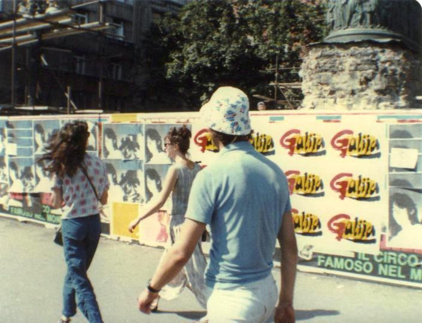
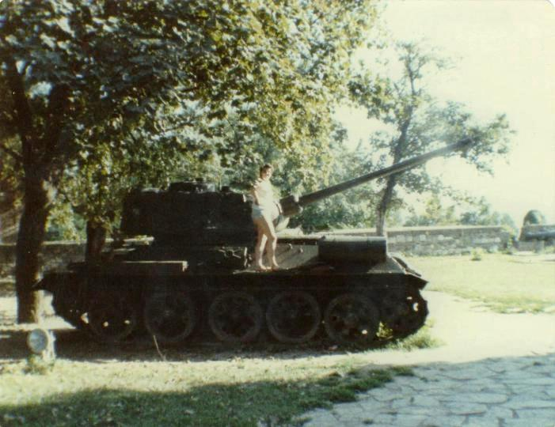

Woke up at 5.30am when a bunch of people came and went, and again at about 6.30am when we arrived in Timisoara
which is the second largest Romanian city. Had to get up to let the hordes off. A couple of English lasses got on our train and we finally got
ourselves some seats by intimidating a number of Congo types. Turns out the two lasses attempted to do the trip yesterday but the train
stopped in Timisoara. They had to spend the night in the University Halls of Residence. Were on the train with loads of Jordanian/Palestinian
types.

Got to the Romanian border on time. First, a man checked out our forms, stamped our passport and gave us a bookmark. Then the customs woman
asked us did we have anything to declare. Then the woman gave us some money, 20 german marks for the few lei we had left. Then the seats were
searched under and the bookmarks wre collected. After 50 minutes we left for Yugoslavia. Here the customs man asked us did we want to declare
anything. Noone said anything even though a strange little man in a blue overall had come through selling dinar for lei and anything else!
Then we had our passports checked. we were there about an hour because the bloody Arabs didn't have visas. As a result the train was running
30 minutes late.
The countryside between the border and Beograd proved very boring. Lots and lots of sweetcorn. The 2 girls told us of their Romanian experiences.
They had watched someone who had taken their address being arrested by the secret police, having been warned to stop associating with him by
the loclas kicking them. They also said people refused to talk to them saying "You never know who's listening". We all decided we hated Romania.

Got to Beograd in an awful little station with no bureau de change. Luckily Midge and Maggie had dinars from their previous visit so they paid
for us to catch the 34 bus to the main station. Here we changed money and put our bags in the left luggage. We were then back out for a free
ride on the bus into town. Sat in a street cafe in the heat under an umbrella and had a beer. The girls left us as they had a train to Athens
to catch. Jon and I finished our 2nd beer, then headed back to the main station. We caught a No. 2 tram to the old Belgrade Fortress which was
declared a Monument of Culture of Exceptional Importance in 1979. We wandered around the tanks, cannons and the old fortifications. Found an
amazing little church which was totally covered with mosaics inside. Some sort of weird Orthodox water sloshing ceremony going on inside.
It was bloody hot so we had an ice-cream and then spent a good 1-2 hours sat on a park bench reading, dozing, doing literally nothing. After
wandering down the usual sidestreets full of cafes and boutiquey shops, we found a department store. Records were selling for the equivalent
of £1.50 including Simple Minds and Ultravox. I bought a thing for making Turkish Coffee and Jon bought a knife. Caught the tram back to
the main station, picked up our luggage and packed our shopping.
Tried to go to the loo but they were the most disgusting squatties I have ever seen or smelt. Decided I wasn't that desperate. Bought
hamburgers and Pepsi on the station as our evening meal. Got on the train without reservations and attempted to bluff our way into a couple of
seats in a compartment. The train was a popular one because it was a Friday night and the train we were catching was useful for getting the
bus connection to Dubrovnik which is where the Beograds go when they go to the seaside. We wern't removed from our seats until 5 minutes before
the train left. The train was so crowded so there was no room to bed down in the corridor. I was OK. Twice during the night someone gave up
their seat for me. Was not a very comfy night. Jon didn't get a seat until about 3.30am. We were 1 hour late reaching Sarajevo. Some git got
in and insisted on putting on his radio. Got a bit more comfortable as a few people got off.
The run from Sarajevo to the coast was very impressive. Gorgeous mountains, a lovely clear river to follow (the Neretva) and lots of tunnels.
We in fact got stuck in one and had to be pulled out and have a new engine put on. It reminded me of being in the Rockies. Finally arrived 1
hour late in Kardeljevo otherwise known as Ploce
{kind=link}
{kind=link}
{kind=link}
{kind=link}